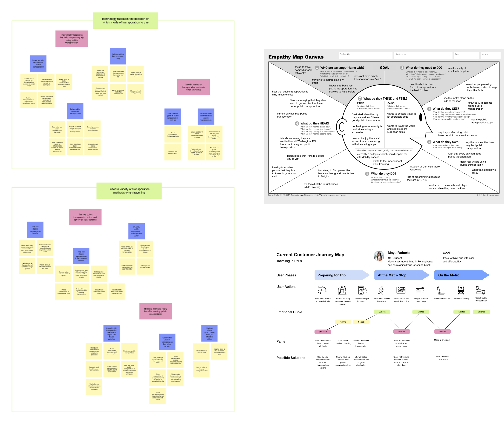

MODERNIZING the COSTAR PRODUCT

Overview
Lead a team of researchers to conduct a multitude of user centered research methods, leveraging the insights to help people make informed decisions while trip planning.
background
Team
- Amelia Austin, Team member
- Rahul Ravula, Team member
March 2022 - May 2022
What was the problem?
Travelers spend upwards of 30% of their time making sense of the web
There are a variety of factors that one must consider when planning a trip which can become increasingly overwhelming. My team and I wanted to answer one simple question:
How can we help people make great, evidence-based decisions about where to go and what to do on a trip?
What was my solution?
Community powered “detour” suggestions
- Reduces the time spent planning activities before hand
- Travelers can feel “spontaneous” while traveling
- Suggestions are verified by real community members/ locals
Public forum allows for verification of activities
- Travelers can rely on activities, housing, transportation with worry
- Reduces need to search third party apps such as TripAdvisor or google
- Easier for users to make decisions if options are presented clearly
Clear trip details increases public transportation use
- Proximity to public transportation increase usage
- Clear directions reduces the need for other third party apps such as Google Maps
Preliminary research
Surveying users allowed us to narrow down scope of problem space
Due to the large problem space of trip planning, we conducted a survey to narrow down our scope and address the biggest needs of our users.
-
Our survey shows that the two biggest obstacles while trip planning were
- Indecisiveness and activities
- Trustworthiness of online information
Defining our problem statement
Reverse assumptions allowed us to challenge the status quo of the current trip planning space
To start populating ideas for our problem statement we wanted to push the boundaries on how we normally approach trip planning. After grouping them into common themes, we found that our key takeaways were:
- Method of cost-saving during travel is utilizing public transportation
- Trip planning does not have to be planned out beforehand, spontaneity can result in some good memories
Conducting a contextual inquiry
Talking to users verified assumptions and created opportunities
After narrowing the problem space, we dove deeper with a contextual research method: Directed Storytelling.
In order to analyze our findings, we each created interpretation notes and use those as the foundation for our affinity diagram. Our affinity diagram helped us zoom out and see larger themes present in our problem space. We decided to model our findings in the form of an Empathy map and Customer Journey map.

Gathering our insights
Transformed what our users said into general insights
After taking a step back and looking at all of the research we had gathered and our models, our biggest insights were:
- People prefer to use public transportation if city planning is robust and has good coverage
- When people realize public transportation stops align with their itinerary, they are more likely to use public transit
- People who stay near public transportation stops can leverage the transportation network to plan their trip
- If people perceive public transportation as the best mode, they will feel more independent while using it
- In cities where public transportation apps are comparable to private ride sharing apps, people feel more confident in the transportation and are more willing to use it
Investigating user needs
Story boarding allowed us to understand how to address user wants and needs
We translated our insights from our contextual inquiry into user wants and needs. These would become the foundations of our storyboards.
-
User Needs
- Need technology to cluster activities based off public
- Need technology to help understand and use public transportation
- Want to stay near public transportation in order to utilize
Prototyping our ideas
Created a mobile application that addressed user needs identified in storyboard
After a couple rounds of speed dating with our storyboards, we found that:
- Online community forums serve as a trustworthy sources of activities
- Detours were welcomed if users did not have a reservation or time constraints
- Proximity and cost were large factors when deciding on transportation
- Detailed information about trip is necessary when using public transportation